Asrama Mahasiswa Kabupaten Kotabaru
Sa-Ijaan Yogyakarta
Rumah kedua bagi mahasiswa asal Kotabaru yang berkuliah di Yogyakarta, dengan semangat "Sa-Ijaan": semufakat, satu hati, se-iya sekata.
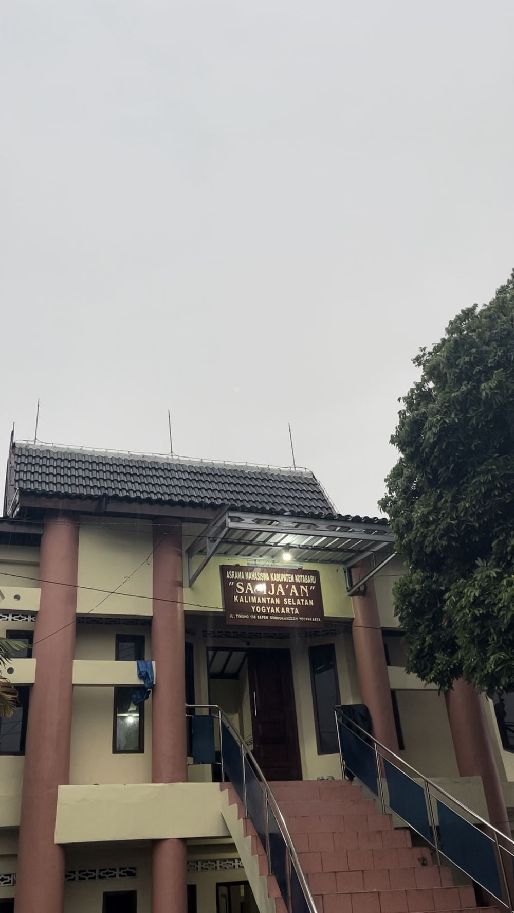
Tentang Kami
Mengenal Lebih Dekat Asrama Sa-Ijaan
Asrama Mahasiswa Kabupaten Kotabaru "Sa-Ijaan" Yogyakarta adalah rumah bersama khusus mahasiswa putra yang disediakan Pemerintah Kabupaten Kotabaru, Kalimantan Selatan, bagi putra daerah yang tengah menempuh pendidikan tinggi di Yogyakarta, dikelola dengan semangat kekeluargaan dan gotong royong.
Asrama Sa-Ijaan diresmikan 10 Januari 2005, sudah lebih dari 20 tahun jadi tempat tinggal mahasiswa Kotabaru di Yogyakarta. Di sini mahasiswa Kotabaru berkumpul lewat organisasi asrama, dan calon mahasiswa baru yang mau kuliah di Yogyakarta bisa tanya-tanya duluan sebelum berangkat.
Visi
Mewujudkan generasi muda Kotabaru yang unggul, berprestasi, dan tetap menjunjung tinggi nilai kekeluargaan serta budaya daerah selama menempuh pendidikan di perantauan.
Misi
Menyediakan hunian yang layak dan aman, mempererat silaturahmi antar mahasiswa Kotabaru, serta menjadi wadah pengembangan diri dan organisasi bagi seluruh penghuni.
Makna Sa-Ijaan
"Sa-Ijaan" adalah motto Kabupaten Kotabaru yang berarti semufakat, satu hati, dan se-iya sekata. Nilai inilah yang menjadi landasan kebersamaan setiap penghuni asrama.
Pengurus
Struktur Pengurus Asrama
Dikelola oleh mahasiswa penghuni asrama yang dipilih untuk menjaga kebersamaan dan kelancaran kegiatan sehari-hari.
Zainal Abrar
KetuaInti Pengurus
Riko Wirawan
SekretarisAhmad Rivaldi
BendaharaKoordinator Seksi
Mohammad Faqih Badali
HumasNoor Awaliansyah
KeamananMuhammad Najwan Raditama
KebersihanRiqqy Fajar Maulana
PerlengkapanSyaikhu Basyar Suyoko
KeagamaanUbaidillah
KesraFasilitas
Fasilitas yang Menunjang Aktivitas Mahasiswa
Setiap sudut Asrama Sa-Ijaan dirancang untuk mendukung kenyamanan, keamanan, dan produktivitas mahasiswa selama menempuh pendidikan di Yogyakarta.
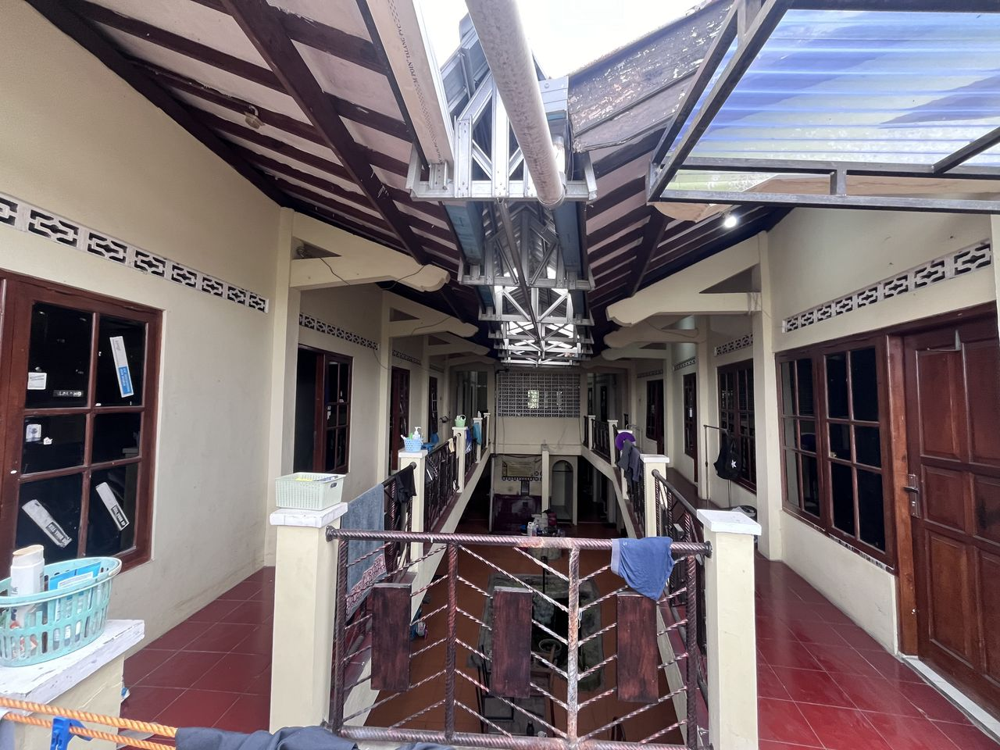
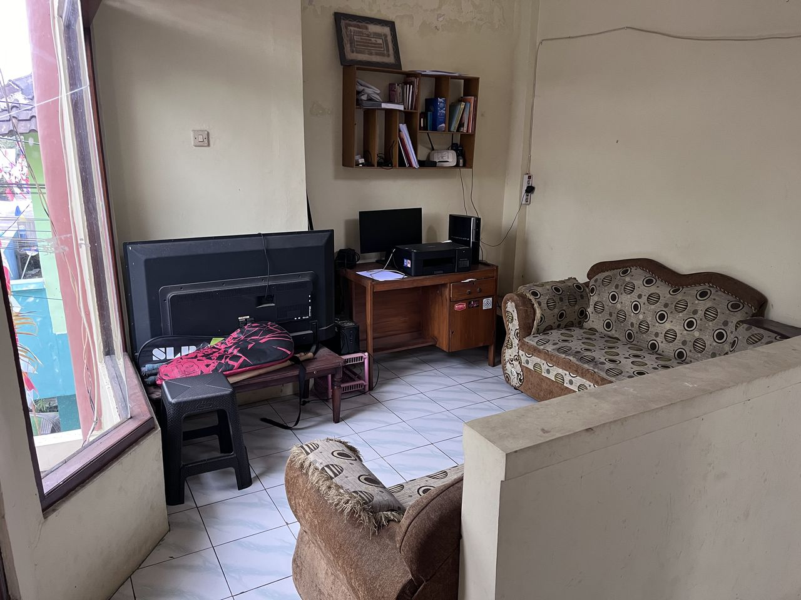
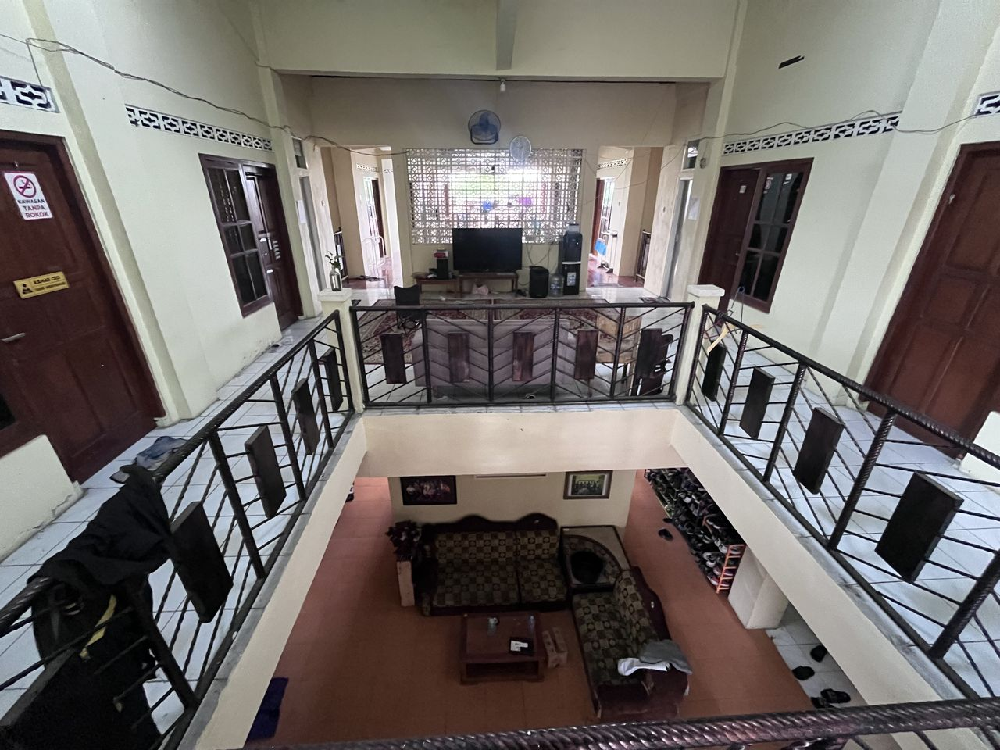
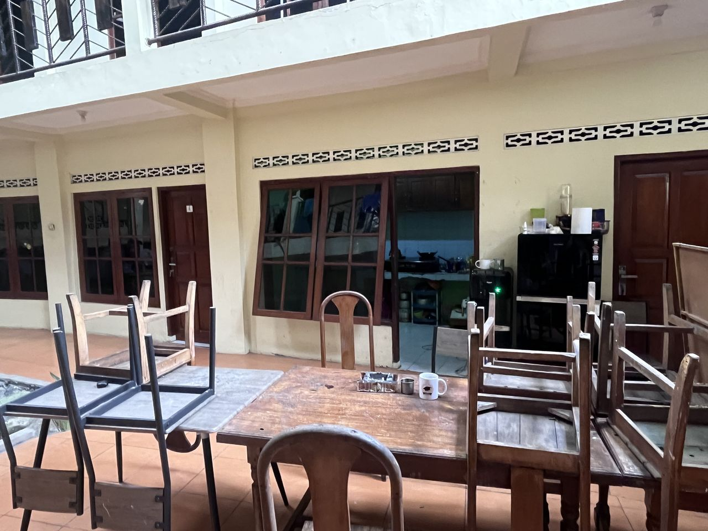
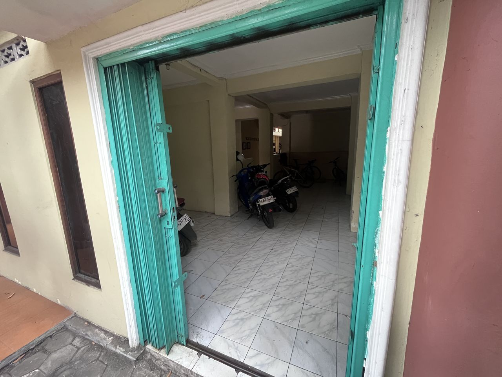
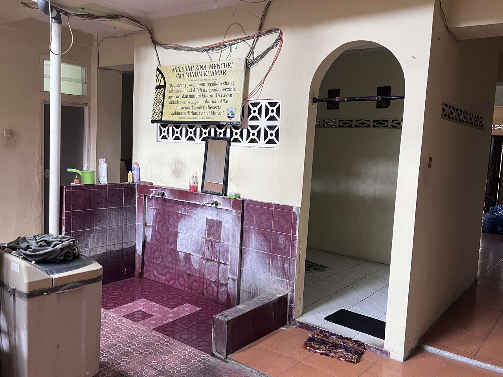
* Klik tiap foto untuk lihat lebih besar dan penjelasannya.
19 kamar tidur (1 orang per kamar) + 1 kamar tamu, saat ini dihuni 13 mahasiswa
4 titik kamera CCTV tersebar di berbagai sudut asrama
Tersedia di lantai bawah, di dalam kompleks asrama
4 unit, bersih dan terawat
Tersedia di ruang bersama untuk nonton bareng
Internet cepat untuk kuliah dan belajar daring
2 unit, tersedia untuk seluruh penghuni
Tersedia di lantai atas dan bawah, tiap kamar punya area jemur pakaian sendiri
Program & Kegiatan
Agenda dan Kegiatan Kebersamaan
Disusun berdasarkan dokumentasi kegiatan di Instagram @asramasaijaanyk, mulai dari kegiatan mingguan sampai agenda tahunan asrama.
Kegiatan Mingguan
Bergiliran tiap minggu, di antaranya:
- Bulu tangkis di Depok Sports Center, Sleman
- Futsal bersama, kadang berkolaborasi dengan asrama mahasiswa daerah lain
- Berenang di Kolam Renang FIK UNY
- Main billiard di Predator Billiard & Coffee Jogja
- Masak-masak & makan bersama di asrama
- Bajalanan Asrama, kuliner dan jalan-jalan keliling Yogyakarta
Agenda Tahunan
- HUT Kemerdekaan RI, 17 Agustus
- HUT Kabupaten Kotabaru
- Ramadhan & Buka Puasa Bersama
- Idul Fitri & Halal Bihalal
- Idul Adha, masak dan berbagi bersama
- Isra Mi'raj & Haul Abah Guru Sekumpul
Kegiatan Lainnya
- Tahun Baru Asrama, camping di malam pergantian tahun (opsi cadangan: masak bersama di asrama)
- Peringatan Sumpah Pemuda, 28 Oktober
- Pemilihan Ketua & Pelantikan Pengurus (Dies Natalis Asrama)
- Kunjungan pembinaan Pemkab Kotabaru & kompetisi antar asrama daerah
Galeri
Kilas Balik Kegiatan Asrama
Klik tiap foto untuk lihat lebih banyak momennya. Dokumentasi lengkapnya ada di Instagram @asramasaijaanyk.
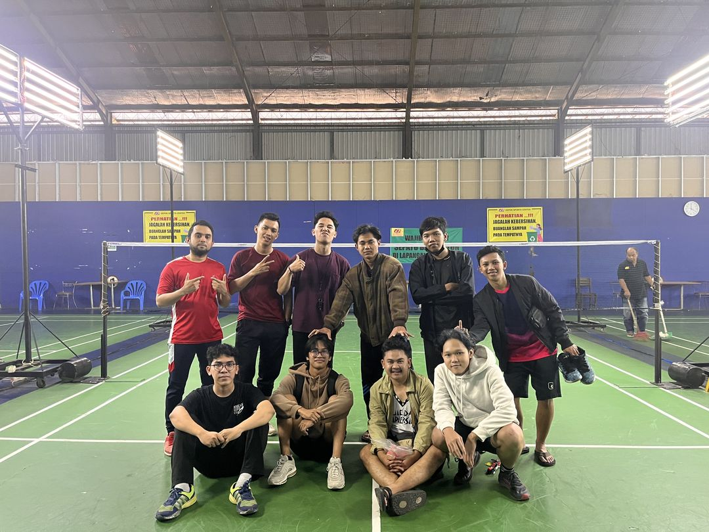
Bulu Tangkis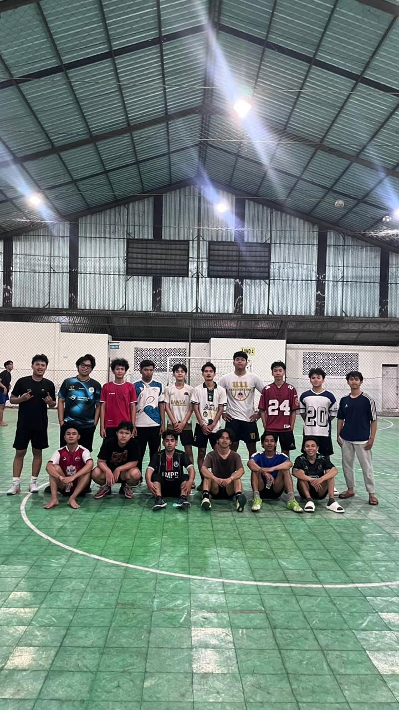
Futsal Bersama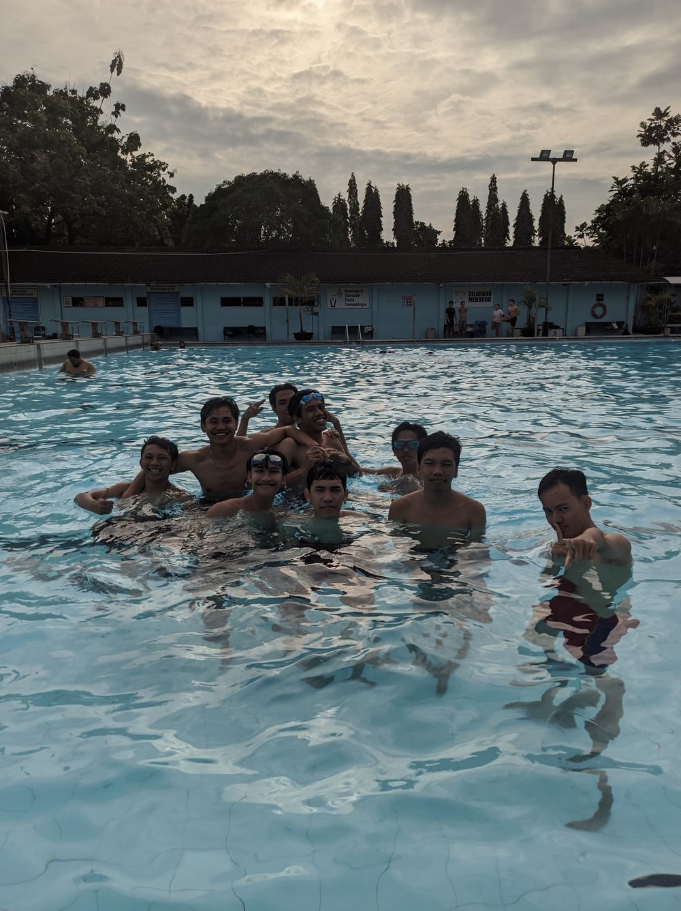
Berenang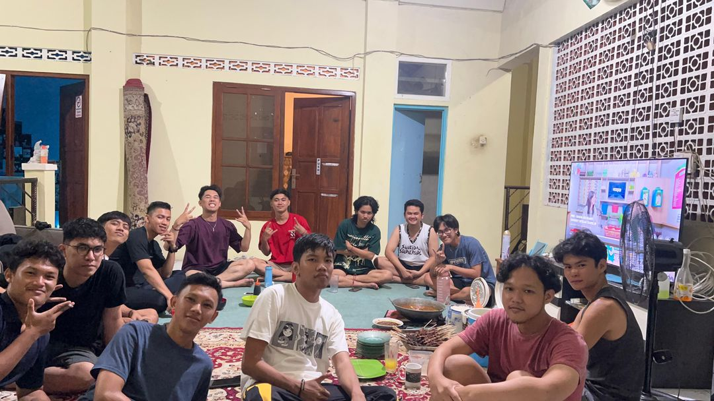
Masak Bersama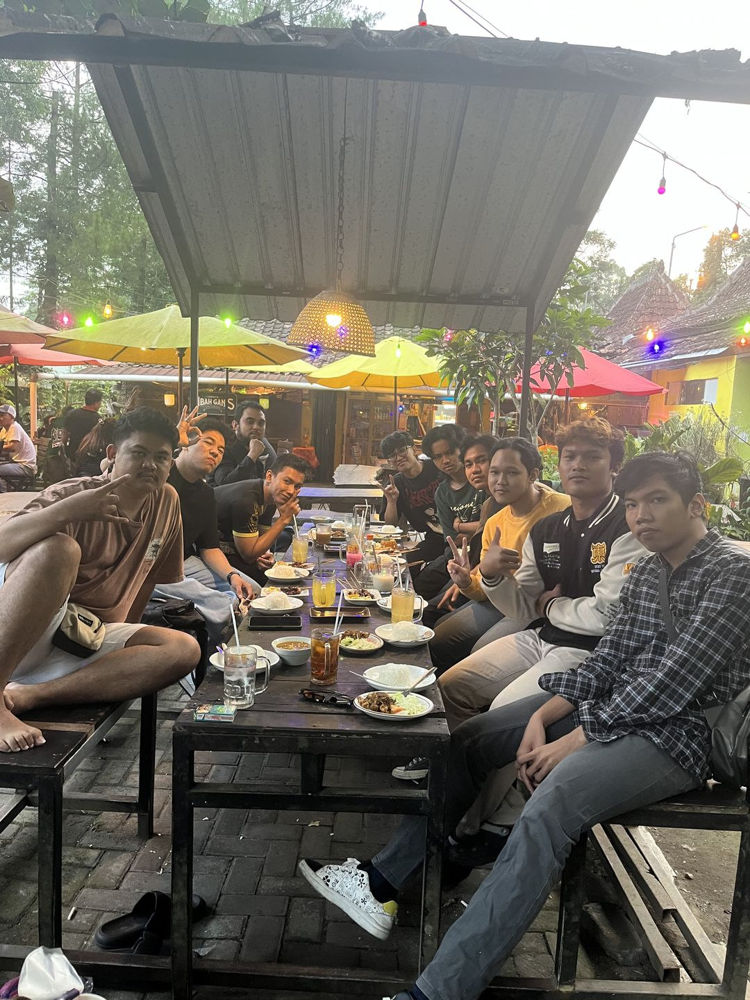
Bajalanan Asrama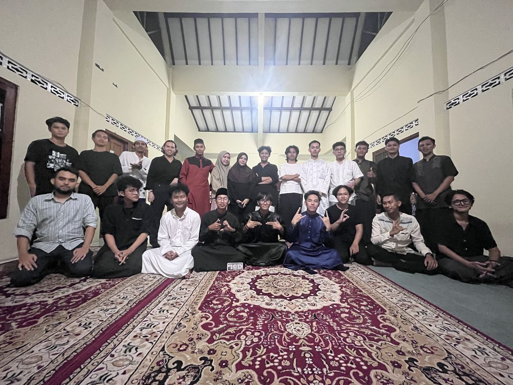
Buka Puasa Bersama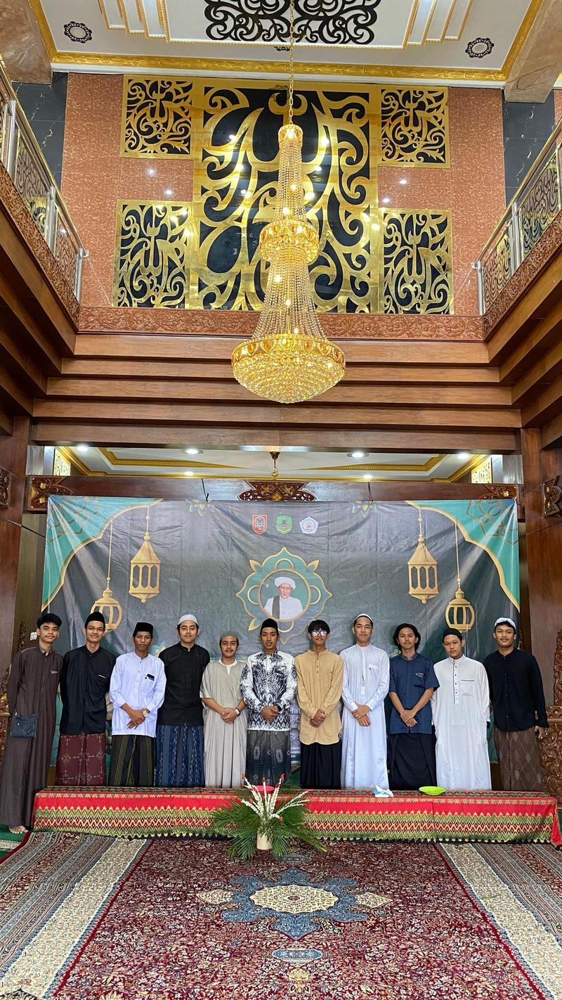
Idul Adha* 2 ubin (Main Billiard, HUT RI) masih placeholder warna, ganti dengan foto asli di folder assets/. Klik tiap foto untuk lihat detailnya.
Testimoni
Kata Mereka Tentang Asrama Sa-Ijaan
Ulasan asli dari Google Maps, rating 4,9 dari 15 ulasan.
"Asrama ramah mahasiswa. Dari biaya dan kegiatan, sangat menyenangkan."
"Tempat tinggal mahasiswa khusus dari kabupaten Kotabaru Kalimantan Selatan. Banyak kegiatan di dalamnya. Sungguh variatif sifat dan sikap penduduknya. Jos deh pokoknya."
"Asramanya keren dan murah banget."
Kontak & Pendaftaran
Tertarik Bergabung?
Isi formulir di bawah ini atau hubungi kami langsung, tim kami akan segera merespons melalui WhatsApp. Pendaftaran dibuka setiap hari, terutama menjelang tahun ajaran baru.
Jarak ke Kampus Sekitar
- UIN Sunan Kalijaga500 m–1 km, jalan kaki 5–10 menit
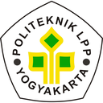
Politeknik LPP Yogyakarta±1 km, berkendara 3 menit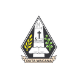
Universitas Kristen Duta Wacana (UKDW)±1,8 km, berkendara 5 menit- Universitas Negeri Yogyakarta (UNY)±2,5 km, berkendara 7–10 menit
- Universitas Atma Jaya Yogyakarta, Kampus Babarsari±3,1 km, berkendara 9 menit
- Universitas Gadjah Mada (UGM)±3,5 km, berkendara 12–17 menit
- UPN "Veteran" Yogyakarta, Kampus Condongcatur±4,5 km, berkendara 12–15 menit
* Estimasi jarak dan waktu tempuh berkendara motor atau mobil, dapat berubah tergantung kondisi lalu lintas.
Syarat Pendaftaran
- Mahasiswa putra, lahir di Kabupaten Kotabaru sesuai data KTP
- Memiliki KTP dengan domisili Kabupaten Kotabaru
- Berstatus mahasiswa aktif, diutamakan jenjang D3, S1, atau S2
Alur Pendaftaran
- 1 Isi formulir pendaftaran atau hubungi kami langsung via WhatsApp
- 2 Tim asrama memverifikasi syarat (KTP domisili & status mahasiswa aktif)
- 3 Konfirmasi dan penempatan kamar bagi calon penghuni yang memenuhi syarat
Jl. Timoho No. 138, Demangan, Kec. Gondokusuman, Kota Yogyakarta, DI Yogyakarta 55221
Ke Kampus UIN Sunan Kalijaga tinggal jalan kaki. Di sepanjang Jl. Timoho ada minimarket (Indomaret, Alfamart, Alfamidi), apotek (K-24, Hana Farma, Sehatmu), swalayan Harmony Market, sampai puluhan warung makan, angkringan, dan kafe. Jarak ke kampus lain di Yogyakarta ada di tabel atas.
Uang pangkal Rp500.000 (sekali di awal masuk)
Iuran kamar Rp100.000 / bulan
Penghuni boleh menetap selama masih berstatus mahasiswa aktif sampai lulus kuliah, lalu diberi waktu tambahan hingga 3 bulan setelah lulus untuk bersiap pindah
0857-5433-3877 (Faqih Badali)
Senin–Sabtu, 08.00–17.00